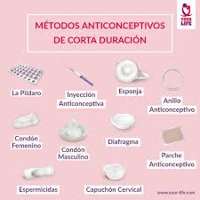
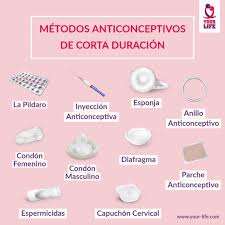

Infórmate sobre tus opciones
Existen diversos métodos anticonceptivos: hormonales, de barrera, naturales, quirúrgicos, etc. Conoce sus ventajas, desventajas y eficacia para tomar decisiones informadas.
Existen diversos métodos anticonceptivos: hormonales, de barrera, naturales, quirúrgicos, etc. Conoce sus ventajas, desventajas y eficacia para tomar decisiones informadas.
